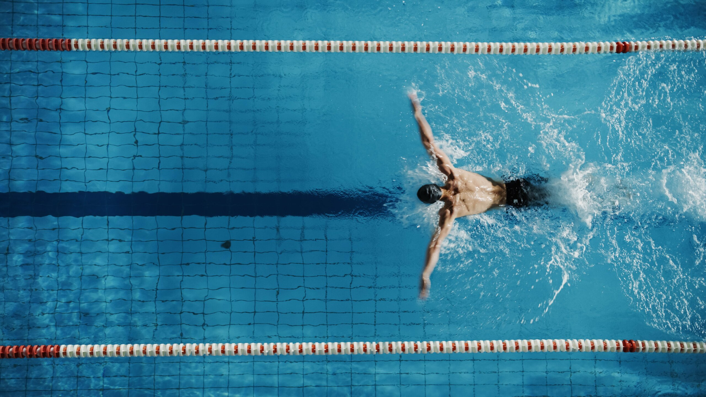

Pływanie to jeden z najbardziej popularnych i lubianych sportów ma świecie. W Polsce aż 70% osob potrafi pływać. Popularność pływania polega na jednej najbardziej istotnej cesze - wszechstronności. Niezależnie od wieku i poziomu sprawności dla każdego znajdzie się odpowiedni styl pływacki. Nie dodając, że pływanie to nie tylko rozrywka, a ważna umiejętność, która może uratować ludzkie życie - czyjeś i nasze własne. Również ta czynność przynosi wiele korzyści zdrowotnych. Pływanie wzmacnia serce i układ krążenia oraz to dobry sposób na redukcję stresu.
Najpopularniejszy styl pływacki to kraul (czasami zwany stylem dowolnym). Jest to najszybszy ze wszystkich stylów, stosowany przez ratowników, jak i w konkurencjach sprinterskich. Podczas niego pływający znajduje się na brzuchu, wykonując ruchy nogami i naprzemiennie unosząc ramiona nad głową. Za szybkość w kraulu odpowiada w większości praca rąk (70-85%) i praca nóg to tylko około 15-30 %.
Inny styl pływacki to styl grzbietowy. Pływający znajduje się wtedy na plecach, wykonując silne wymachy za siebie. Broda podczas niego nie dotyka klatki piersiowej, co służy nadawaniu ciału hydrodynamicznego kształtu.
Trzeci styl pływacki to żabka. Wymaga dużej siły oraz wytrzymałości, lecz jest to całkiem powolny styl pływacki. Podczas niego pływający naśladuje pływającą żabę, znajdując się na brzuchu. Wykonuje skręt ramion, które unosi nad wodą, a później rozpycha na boki. Po wykonaniu ruchu rąk podkurcza nogi, a nastepnie szybko prostuje. Jako ciekawostkę warto wspomnieć, że pływanie żabką było kiedyś zalecane na leczenie skrzywień kręgosłupa, jednak teraz już wiemy, że ćwiczenie to nie przynosiło żadnych poztywnych skutków dla chorego.
Następny styl pływacki to styl motylkowy. Jest to najtrudniejszy techniecznie styl pływania. Zwany jest również delfilem i motylkiem. Ten styl powstał poprzez zaczerpnięcie naturalnego ruchu delfinow w wodzie. Pływak podczas motylka wykonuje ruch ramion nad wodą, na co przypadają dwa ruchy nogami. Ciało cały czas znajduje się na brzuchu.
Ostatni i najprosztszy styl pływania to piesek, który jest najbardzeij popukarny u dzieci uczących się pływać. Jest jednocześnie najstraszą techniką pływania. Podczas niej pływak leży klatką piersiową do dołu i porusza rekami w górę i dół. Nogi natomisat wykonują pionowo ruch nożycowy.
Podsumowując, każdy styl różni się od siebie i ma inną charakterystykę. Dla każdego pływaka inny styl będzie perfekcyjnym. Pływanie to nie tylko sposób na relaks i rozrywkę, ale rówmież umiejiętność życiowa, którą każdy powienien posiadać.
Tutaj załączam filmik ze stylami pływackimi.